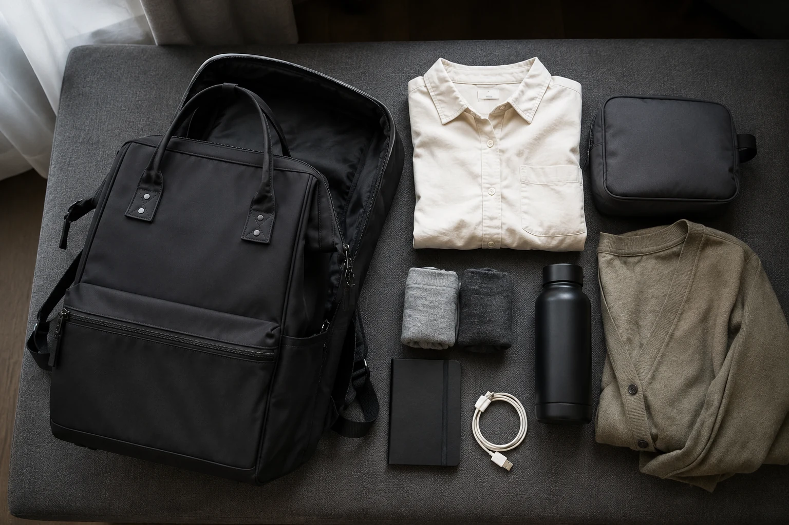

1박 여행의 짐을 첫날과 다음날로 읽기

1박 여행의 짐을 고르면 한밤을 위해 준비하는 물건과 이틀 동안 계속 쓰는 물건이 함께 놓입니다. 옷과 세면도구를 더한다고 준비가 끝나는 것은 아닙니다. 첫날 도착해서 바로 활동할지 숙소로 갈지, 다음날 체크아웃 뒤 얼마나 이동할지에 따라 꺼내는 순서가 달라집니다. 짧은 여행을 가방 하나로 꾸릴 계획이라면 일정의 장면을 먼저 적어볼 만합니다. 숙박 횟수보다 실제로 언제 무엇을 쓰는지가 목록의 기준이 됩니다.
첫날 이동과 활동, 숙소, 둘째 날 외출과 귀가를 순서대로 놓습니다. 날씨와 방문 장소의 현재 안내를 확인하고 옷과 필요한 개인 물건을 고릅니다. 숙소에서 제공하는 비품은 실제 예약 안내에서 확인하며 모든 숙소가 같은 것을 준비한다고 가정하지 않습니다. 교통수단을 이용한다면 반입 조건도 현재 안내에 대조합니다. 이렇게 확인한 뒤에 물건을 펼치면 직접 가져갈 것과 제공받을 것, 일정에서 필요하지 않은 것을 구분하기 쉽습니다.
첫날 바로 꺼낼 짐
이동 확인 자료와 연락 도구는 출발 때부터 사용할 묶음입니다. 첫 방문에서 쓸 개인 소품이나 활동 자료가 있다면 그다음에 찾을 위치를 정합니다. 숙소에서만 쓸 옷이 입구를 차지하면 당장 필요한 물건을 찾기 위해 다시 정리하게 될 수 있습니다. 모든 물건을 종류대로만 담기보다 먼저 꺼낼 것과 나중에 꺼낼 것을 나누어보세요. 가방을 닫은 뒤 첫 묶음만 실제로 꺼내보면 준비한 순서가 맞는지 확인할 수 있습니다.
옷은 여행 일정에서 입거나 교체할 계획을 기준으로 고릅니다. 격식 있는 장소가 포함되었는지, 활동 뒤 옷 상태가 달라질 수 있는지를 생각합니다. 필요한 양은 개인의 조건에 따라 정하고 모든 사람에게 같은 벌수를 적용하지 않습니다. 신발이나 부피 있는 물건을 더한다면 포장된 외형을 실제로 확인하세요. 작은 파우치에 나누어 담았다는 사실만으로 전체 짐이 줄어든 것은 아니므로 한 곳에 펼쳐 최종 묶음을 보는 과정이 필요합니다.
개인 용기는 안내된 닫힘과 운반 방법을 확인하고 종이와 기기에 직접 닿지 않게 위치를 나눕니다. 작게 옮겨 담을 계획이 있다면 해당 용기와 교통수단의 조건도 따로 봅니다. 숙소에서만 쓸 묶음은 이동 중 꺼내는 물건과 섞이지 않게 둘 수 있습니다. 사용한 뒤 다른 상태로 돌아올 물건이 있다면 귀가용 주머니나 별도 운반 방법을 생각하세요. 출발할 때 단정한 모습과 돌아올 때의 형태가 같은 것은 아닐 수 있습니다.
짧은 여행의 실제 제품 예시로 Himawari No.9018 제품 정보를 참고할 수 있습니다. 자신의 이동 묶음과 숙소용 짐을 담은 조건으로 여닫는 순서를 확인하는 방식입니다. 모델 이름이나 외부 크기로 1박 짐이 모두 들어간다고 정하지 않습니다. 실제 가져갈 물건을 준비하고 입구와 내부 배치에 필요한 정보를 대조한 뒤, 가방을 메고 이동할 때의 조건도 함께 살펴볼 수 있습니다. 짐이 많으면 다른 운반 묶음을 나누는 선택도 가능합니다.

숙소에서 다시 바뀌는 순서
숙소에 도착하면 이동 중 썼던 자료와 숙소용 묶음을 정리합니다. 옷과 개인 용기를 꺼내 각각 사용할 자리로 옮기고, 다음 외출에서도 쓸 연락 도구와 개인 소지품은 직접 관리합니다. 충전 도구를 사용한다면 나중에 회수할 위치를 기억해두세요. 가방에서 꺼낸 물건이 방의 여러 곳으로 나뉘면 다음날 확인할 범위도 늘어납니다. 어디에 무엇을 두었는지 알아볼 수 있는 정도의 묶음으로 남기는 편이 정리하기 쉽습니다.
첫날 활동에서 젖거나 사용한 물건이 생겼다면 깨끗한 물건과 나누어 생각합니다. 각 물건의 관리 안내를 따르고 임시 운반할 상태를 정합니다. 옷이나 소품을 닫힌 주머니에 넣었다면 그것이 집에서 먼저 꺼낼 묶음인지도 알아두세요. 가방을 음식이나 젖은 물건의 보관 기능으로 가정하지 않고 실제 포장과 운반 조건을 확인합니다. 첫날의 상태 변화가 다음날 가방의 배치를 바꿀 수 있으므로 아침에 다시 볼 필요가 있습니다.
둘째 날 체크아웃 뒤 일정이 남아 있다면 하루 동안 직접 들 물건을 다시 고릅니다. 짐을 맡길 서비스가 가능한지는 해당 안내를 확인하고, 직접 운반해야 한다면 그 상태에서 갈 장소를 계획합니다. 귀가 교통편에서 쓸 확인 자료와 연락 도구는 계속 찾을 위치에 남길 수 있습니다. 숙소에서 모두 다시 담았다는 사실과 남은 하루에서 꺼내기 쉬운 구성은 별도로 확인할 부분입니다. 이동할 순서에 맞는 묶음을 실제로 정해보면 됩니다.
귀가할 때 추가된 물건
여행 중 구입하거나 받은 물건은 포장된 형태로 대조합니다. 기념품이 작아도 상자와 완충재가 더해지면 기존 짐과 닿는 면이 달라질 수 있습니다. 판매처의 운반 안내와 이용할 교통수단의 현재 조건을 확인하세요. 가방을 닫기 위해 다른 물건을 강하게 눌러야 한다면 별도 운반을 검토할 수 있습니다. 출발할 때의 빈 공간을 목표로 채우기보다 현재 물건의 상태와 바로 사용할 소지품의 위치를 유지하는 편이 필요합니다.
숙소를 떠나기 전에는 가방 안 목록과 방의 실제 위치를 함께 봅니다. 충전하던 자리와 개인 용기를 쓰던 곳, 옷을 두었던 면에 남은 것이 없는지 살펴보세요. 가방 하나를 메었다고 모든 짐이 회수된 것은 아닐 수 있습니다. 별도로 들고 온 포장이나 겉옷도 개수에 포함합니다. 받은 확인 자료가 있다면 필요한 보관 여부를 판단하고 개인정보가 드러난 종이는 적절히 관리합니다. 마지막 이동에서 쓸 묶음을 확인한 뒤 출발하면 됩니다.
집에 돌아오면 사용한 물건과 임시 포장부터 꺼냅니다. 여행용 자료는 목적에 맞는 보관 장소로 옮기고 평소 소지품은 원래 자리로 돌려놓습니다. 다음 여행을 위한 기록에는 가져갔지만 쓰지 않은 것과 현장에서 필요했던 것을 구분해 남길 수 있습니다. 숙소의 제공 비품이나 교통 조건이 바뀌면 그 기록을 그대로 적용하지 않고 현재 안내와 다시 대조합니다. 첫날 꺼낼 묶음과 다음날 돌아올 상태를 함께 생각했던 준비가 다음 짐을 판단할 자료로 남습니다.